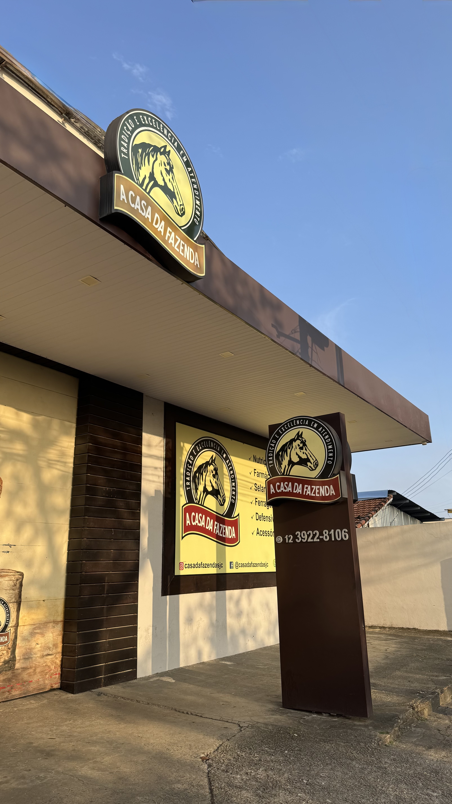
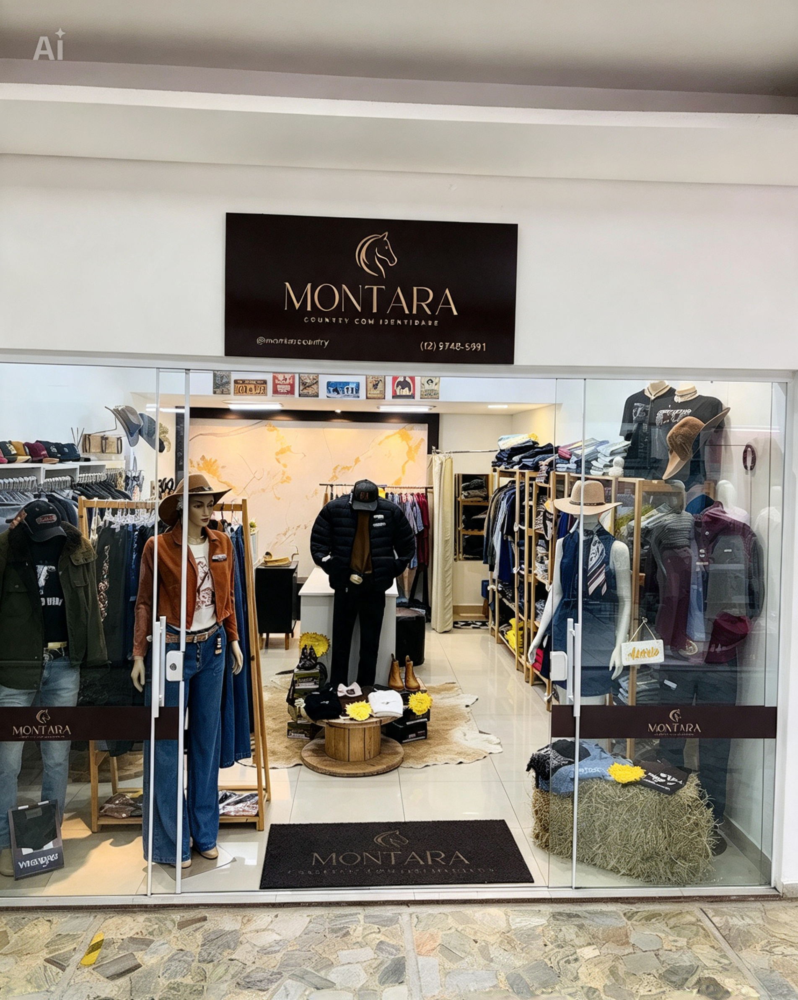
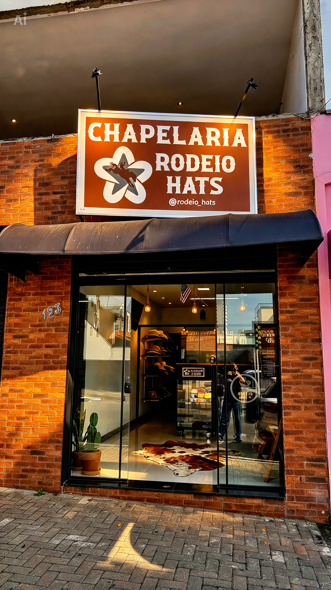
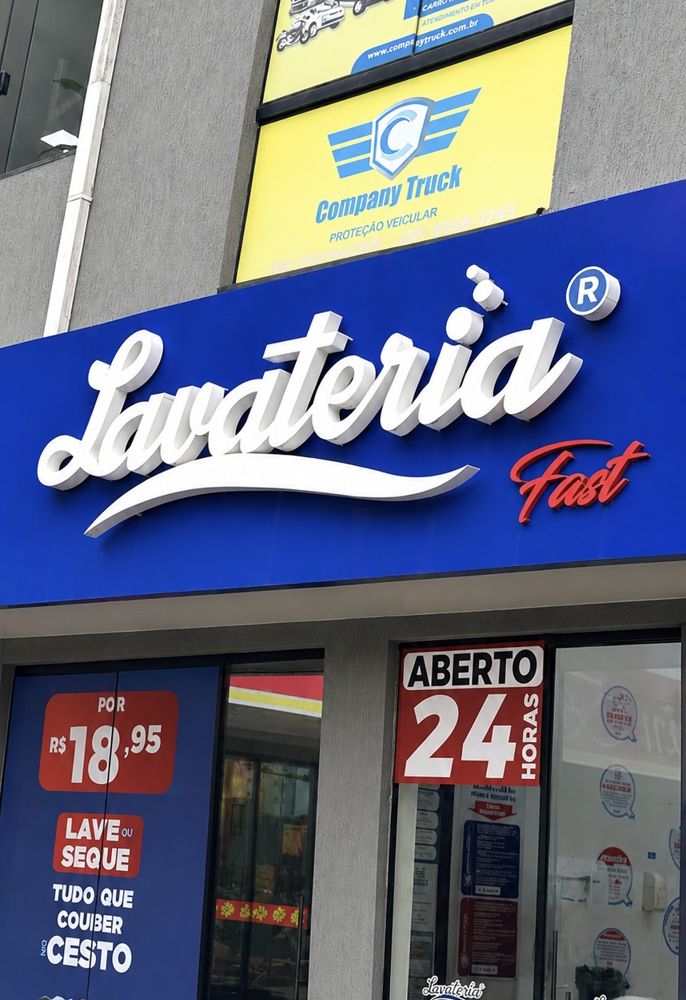

Vídeos para Reels
Vídeos curtos e dinâmicos para apresentar produtos, serviços, bastidores e experiências.
Alguns negócios e projetos que já passaram pelas lentes da DG.




Da ideia à publicação, com uma comunicação que combina com a identidade do seu negócio.
Vídeos curtos e dinâmicos para apresentar produtos, serviços, bastidores e experiências.
Imagens para valorizar produtos, espaços, pessoas e a presença digital da sua marca.
Planejamento e produção de materiais para manter suas redes sociais ativas e interessantes.
Organização das publicações e acompanhamento da comunicação da sua marca.
Configuração e acompanhamento de campanhas para ampliar o alcance das publicações.
Registro de momentos, celebrações e eventos especiais em foto e vídeo.
Conteúdo para marcas, eventos e momentos que merecem ser lembrados.
Produção de conteúdo para negócios locais.
Aniversários e celebrações.
Provas e eventos equestres.
Conteúdo pensado para redes sociais.
A DG Videomaker nasceu de um gosto por criar imagens e contar histórias. O que começou como uma paixão foi ganhando forma, propósito e espaço para se tornar um trabalho.
Hoje, a proposta é ajudar marcas e pessoas a mostrarem o que têm de melhor por meio de fotos e vídeos feitos para conectar, apresentar e valorizar cada história.
Atendimento em São José dos Campos, Santa Isabel e região.
Você conta o que precisa e alinhamos o objetivo do conteúdo.
Organizamos a captação e produzimos fotos e vídeos.
Você recebe os materiais finalizados para usar nas suas redes.